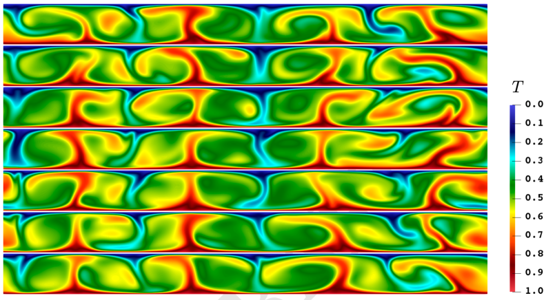
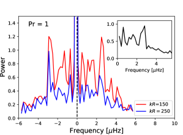
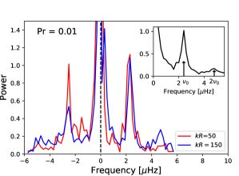
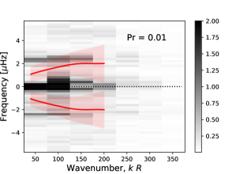

تكشف الاهتزازات المتمايلة في حمل رايلي-بينار
ضوءا جديدا على الحمل الحراري الشمسي
يمثل حمل رايلي-بينار وفق تقريب بوسينسك (RBC) ذي الدورية الأفقية نظاما نموذجيا بسيطا لدراسة تشكل
البنى واسعة النطاق في تدفقات الحمل الحراري المضطربة. أجرينا مجموعة من المحاكاة العددية 2D لحمل RBC بين حدود لا-انزلاقية
عند أعداد مختلفة لبرانتل ( ) ورايلي (
) ورايلي ( )، بحيث يكون حاصل ضربهما ممثلا لمنطقة
الحمل الحراري العليا في الشمس. عندما تكون لزوجة المائع منخفضة بما يكفي () ويكون الاضطراب قويا ()
نجد أن البنى الكبيرة تبدأ في الاقتران زمانيا ومكانيا. بالنسبة إلى
)، بحيث يكون حاصل ضربهما ممثلا لمنطقة
الحمل الحراري العليا في الشمس. عندما تكون لزوجة المائع منخفضة بما يكفي () ويكون الاضطراب قويا ()
نجد أن البنى الكبيرة تبدأ في الاقتران زمانيا ومكانيا. بالنسبة إلى  نرصد اهتزازات متمايلة طويلة العمر للتدفقات الصاعدة
والهابطة، تتزامن عبر خلايا حمل حراري متعددة. وقد يتيح هذا النظام الجديد من الحمل الحراري الاهتزازي تفسيرا
للخواص الشبيهة بالموجات للمقياس المهيمن للحمل الحراري على الشمس (التحبب الفائق).
نرصد اهتزازات متمايلة طويلة العمر للتدفقات الصاعدة
والهابطة، تتزامن عبر خلايا حمل حراري متعددة. وقد يتيح هذا النظام الجديد من الحمل الحراري الاهتزازي تفسيرا
للخواص الشبيهة بالموجات للمقياس المهيمن للحمل الحراري على الشمس (التحبب الفائق).
Key Words.:
الحمل الحراري — الهيدروديناميك — الاضطراب — الموجات — الشمس: عام1 مقدمة
يمثل التحبب الفائق الشمسي المقياس المهيمن للحمل الحراري على سطح الشمس، بحجم مميز قدره Mm وعمر طي أسي مقداره 1–3 يوم (Rincon & Rieutord 2018). وقد ظل لغزا منذ اكتشافه قبل أكثر من 60 سنة (Leighton et al. 1962). وعلى وجه الخصوص، ينتشر نمط التحبب الفائق بالنسبة إلى الجريان المتوسط للبلازما ويدعم اهتزازات بتردد قدره Hz أو بدور يقارب أسبوعا واحدا (Gizon et al. 2003; Langfellner et al. 2018). ويمثل تردد الاهتزاز سمة رصدية شديدة المتانة، وقد قيس على أنه مستقل عن خط العرض الشمسي، أي إنه مستقل عن معدل الدوران المحلي. ولم يُقترح تفسير واضح لذلك.
لاستكشاف الآليات الفيزيائية الكامنة وراء اهتزاز نمط التحبب الفائق الشمسي، نختار النظر في أبسط إعداد للمحاكاة: حمل RBC وفق بوسينسك بين صفيحتين ساكنتين مع شروط حدية دورية أفقيا. وبدلا من البدء بنموذج فيزيائي واقعي تماما، نركز عمدا على أبسط نظام قد يُظهر «تزامنا ذاتيا» لأكبر مقاييس الحمل الحراري الحاملة للطاقة، بما يؤدي إلى اهتزازات واسعة النطاق شبيهة بتلك المرصودة. نبدأ بنموذج 2D مبسط بلا تطبق ولا قص عمودي، وهي شروط تختلف عن الموجودة في الشمس. ويخدم هذا التهيؤ بوصفه خطوة أولى نحو فهم الديناميات الأساسية. وفي العمل المستقبلي نعتزم زيادة تعقيد النموذج تدريجيا بإدخال القص العمودي والتطبق وتوسيع الإعداد إلى ثلاثة أبعاد. ومع ذلك، فإن المحاكاة 2D المعروضة في هذه الورقة توسع بدرجة ملحوظة مجال أعداد رايلي وبرانتل المستخدمة في محاكاة الحمل الحراري الشمسي التقليدية، مع إبقاء الكلفة الحاسوبية تحت السيطرة.
يمثل تطبق الكثافة عنصرا أساسيا في الحمل الحراري الشمسي عند مقاييس التحبب الفائق، ومن المتوقع أن يؤثر في نسبة البعد الأفقي إلى العمودي لخلايا التحبب الفائق (وهي نقطة أُدركت مبكرا في Parker 1973). ورصديا، تبقى نسبة الأبعاد هذه مسألة مفتوحة ولا تزال تتحدى التحليلات الهليوزلزالية (انظر، مثلا، Hanson et al. 2024). وعلى الرغم من إقرارنا بأهمية التطبق، فإننا نختار إهماله ونتبنى تقريب بوسينسك. وبدلا من ذلك نركز على معلمتين أساسيتين أخريين في الحمل الحراري الشمسي: مستوى الاضطراب ولزوجة البلازما الشمسية.
تكاد الدراسات شبه التحليلية تصف دائما حالات الحمل الحراري القريبة من بدايته
(Bolton et al. 1986).
وتعد المحاكاة العددية ضرورية لدراسة نظام الاضطراب الشديد. ويلزم قدر خاص من العناية
في اختيار الهندسة الصحيحة، والشروط الحدية، والمعلمات الفيزيائية.
ويحدد عدد رايلي  شدة التأثير الحراري، أما عدد برانتل
شدة التأثير الحراري، أما عدد برانتل
 فيحدد شدة انتشار الزخم نسبة إلى انتشار الحرارة.
فيحدد شدة انتشار الزخم نسبة إلى انتشار الحرارة.
من المعروف أن الاهتزازات توجد في إعداد RBC ذي الجدران، وهي مرتبطة بدوران واسع النطاق (LSC) عند أعداد رايلي مرتفعة جدا (Krishnamurti & Howard 1981; van der Poel et al. 2013). وقد اقتُرحت عدة نماذج تحليلية منخفضة الأبعاد لتفسير الاهتزازات المترابطة الموجودة في LSC للحمل RBC المضطرب، ومنها نموذج «انعكاس الريح المتوسطة» (Sreenivasan et al. 2002). وقد دُرس حديثا نظام أقل تقييدا يتألف من إعداد ذي جدران تُبرَّد فيه القاعدة عند الطرفين وتُسخَّن في الوسط باستخدام محاكاة عددية مباشرة (Reiter & Shishkina 2020). وعند أعداد برانتل منخفضة () وأعداد رايلي مرتفعة ()، تُرصد اهتزازات محددة بوضوح في ممرات التدفق الصاعد. وهذه النتيجة مشجعة. غير أن الحمل الحراري الأفقي يُظهر قوانين تحجيم مختلفة لنقل الحرارة والزخم عن الحمل الحراري المدفوع بتدرج حراري مصطف مع اتجاه الجاذبية.
وقد نُظر في محاكاة ذات شروط حدية دورية أفقيا وخالية من الإجهاد عند الأعلى والأسفل.
ولا توجد حالة اهتزازية مستقرة عندما تكون نسبة حجم المجال الأفقي إلى العمودي،  ، صغيرة جدا (e.g.,
، صغيرة جدا (e.g.,  in Vincent & Yuen 1999).
وتتضح أهمية أن تكون كبيرة بما يكفي للسماح بتشكل بنى واسعة النطاق في التدفقات شديدة الاضطراب في محاكاة 3D لحمل RBC وفق بوسينسك (Parodi et al. 2004).
وقد بُين أن الشرط
in Vincent & Yuen 1999).
وتتضح أهمية أن تكون كبيرة بما يكفي للسماح بتشكل بنى واسعة النطاق في التدفقات شديدة الاضطراب في محاكاة 3D لحمل RBC وفق بوسينسك (Parodi et al. 2004).
وقد بُين أن الشرط  كاف لكي يتشبع الامتداد الأفقي للبنى عند كبير (von Hardenberg et al. 2008; Stevens et al. 2018).
بالنسبة إلى ، أُجريت تجارب مخبرية باستعمال فلز سائل () (Akashi et al. 2019) و
رُصدت اهتزازات عندما ؛ لكن هذه الاهتزازات نُسبت إلى دوران واسع النطاق.
ومع ذلك نلاحظ أنه بالنسبة إلى الشروط الحدية حرة الانزلاق عند الأعلى والأسفل و
كاف لكي يتشبع الامتداد الأفقي للبنى عند كبير (von Hardenberg et al. 2008; Stevens et al. 2018).
بالنسبة إلى ، أُجريت تجارب مخبرية باستعمال فلز سائل () (Akashi et al. 2019) و
رُصدت اهتزازات عندما ؛ لكن هذه الاهتزازات نُسبت إلى دوران واسع النطاق.
ومع ذلك نلاحظ أنه بالنسبة إلى الشروط الحدية حرة الانزلاق عند الأعلى والأسفل و ، قد يظهر عدم استقرار نمط قصي
عند
، قد يظهر عدم استقرار نمط قصي
عند  كبير بما يكفي و
كبير بما يكفي و معتدل، بحيث يحدث نقل الحرارة على هيئة دفعات ويخضع التدفق
لاهتزازات عالمية منخفضة التردد (Goluskin et al. 2014).
معتدل، بحيث يحدث نقل الحرارة على هيئة دفعات ويخضع التدفق
لاهتزازات عالمية منخفضة التردد (Goluskin et al. 2014).
يتطلب الحمل الحراري الشمسي  منخفضا جدا و
منخفضا جدا و مرتفعا جدا (Hanasoge et al. 2012). وحتى الآن أُجريت محاكاة RBC
عند
مرتفعا جدا (Hanasoge et al. 2012). وحتى الآن أُجريت محاكاة RBC
عند  مرتفع أو منخفض، ولكن نادرا ما جُمعت الحالتان. وقد أُجريت محاكاة عددية مباشرة ثلاثية الأبعاد (Pandey et al. 2018)
مع و
مرتفع أو منخفض، ولكن نادرا ما جُمعت الحالتان. وقد أُجريت محاكاة عددية مباشرة ثلاثية الأبعاد (Pandey et al. 2018)
مع و ، وكذلك من أجل حتى عند ثابت، وكل منها مع وجدران جانبية.
ورُصد تشكل بنى فائقة، لكن لم يُبلَّغ عن أي اهتزاز.
نرغب هنا في استخدام إعداد هندسي أكثر ملاءمة لدراسة المسألة الشمسية، وفي تغطية مجال من
(كفاءة الحمل الحراري) يكون أقرب إلى القيمة الشمسية، مع خفض
، وكذلك من أجل حتى عند ثابت، وكل منها مع وجدران جانبية.
ورُصد تشكل بنى فائقة، لكن لم يُبلَّغ عن أي اهتزاز.
نرغب هنا في استخدام إعداد هندسي أكثر ملاءمة لدراسة المسألة الشمسية، وفي تغطية مجال من
(كفاءة الحمل الحراري) يكون أقرب إلى القيمة الشمسية، مع خفض  وتحقيق سلاسل زمنية طويلة المدة.
والهدف هو بلوغ نظام يمكن أن يدعم فيه حمل RBC 2D اهتزازات مستقرة بفترات تساوي بضعة أضعاف
زمن انقلاب الحمل الحراري (أي ترددات شمسية في مجال الميكروهرتز).
وتحقيق سلاسل زمنية طويلة المدة.
والهدف هو بلوغ نظام يمكن أن يدعم فيه حمل RBC 2D اهتزازات مستقرة بفترات تساوي بضعة أضعاف
زمن انقلاب الحمل الحراري (أي ترددات شمسية في مجال الميكروهرتز).
2 النموذج واختيار المعلمات الفيزيائية
تتبع المعادلات الديناميكية الحاكمة تقريب بوسينسك، الذي يقوم على افتراض أن تطبق الكثافة صغير وأن
المتغيرات القياسية تتذبذب بمقدار صغير حول قيمها المتوسطة (Lesieur 2008). نعتبر صندوقا ديكارتيا 2D؛ وتُرمز الإحداثيات بـ و في الاتجاهين الأفقي والصاعد على التوالي (يشير متجه الوحدة إلى الأعلى).
في ترميزنا تمثل السرعة، وتمثل درجة الحرارة الكامنة،
وتمثل و
و في الاتجاهين الأفقي والصاعد على التوالي (يشير متجه الوحدة إلى الأعلى).
في ترميزنا تمثل السرعة، وتمثل درجة الحرارة الكامنة،
وتمثل و انتشاريتي الزخم والحرارة (الثابتتين)، وتمثل
انتشاريتي الزخم والحرارة (الثابتتين)، وتمثل  معامل التمدد الحجمي، وتمثل تسارع الجاذبية.
ولكتابة المعادلات الديناميكية باستخدام متغيرات لا بعدية، نقيس جميع الأطوال بارتفاع الصندوق الحاسوبي ، والزمن بالمقياس الزمني للانتشار ، ودرجة الحرارة بفرق درجة الحرارة بين القاع والقمة.
وبما أن الحالة الخلفية لحمل RBC وفق بوسينسك هيدروستاتية، فإن الكثافة لا تظهر صراحة في المعادلات. وباستخدام عدد برانتل وعدد رايلي الحراري
معامل التمدد الحجمي، وتمثل تسارع الجاذبية.
ولكتابة المعادلات الديناميكية باستخدام متغيرات لا بعدية، نقيس جميع الأطوال بارتفاع الصندوق الحاسوبي ، والزمن بالمقياس الزمني للانتشار ، ودرجة الحرارة بفرق درجة الحرارة بين القاع والقمة.
وبما أن الحالة الخلفية لحمل RBC وفق بوسينسك هيدروستاتية، فإن الكثافة لا تظهر صراحة في المعادلات. وباستخدام عدد برانتل وعدد رايلي الحراري  ، تكون المعادلات الحاكمة
، تكون المعادلات الحاكمة
 |
|||||
 |
|||||
 |
 |
 |
حيث إن حقل ضغط.
نعتبر شروطا حدية دورية أفقية في الإحداثي  وشروطا حدية غير نافذة عند الأعلى والأسفل.
بالنسبة إلى الحد العلوي () لدينا
وشروطا حدية غير نافذة عند الأعلى والأسفل.
بالنسبة إلى الحد العلوي () لدينا
 |
وبالنسبة إلى القاع () لدينا
تمنع الشروط الحدية اللا-انزلاقية تطور تدفق قصي متوسط في المحاكاة. وتؤدي الشروط الحدية العليا والسفلى إلى طبقات حدية لزجة تكون أصغر من الطبقات الحدية الحرارية كلما كان . ونلاحظ أن حمل RBC في مجالات 2D يُظهر خصائص نقل حراري مشابهة لما في 3D (van der Poel et al. 2013; Schmalzl et al. 2004)، حتى عند أعداد Pr منخفضة (Pandey 2021).
يُحدد نظامنا بالكامل من خلال و و . ولا تُضمَّن فيه التطبق والكروية وبعض الخصائص الأخرى لمنطقة الحمل الحراري في الشمس. وعلى وجه الخصوص، لا يمكن احتساب الانتقال الإشعاعي الرقيق بصريا للفوتوسفير الشمسي، كما تغيب الموجات الصوتية في حمل RBC وفق بوسينسك. إن القيم الشمسية لـ
و غير قابلة للتحقيق بموارد الحوسبة الحالية (Kupka & Muthsam 2017)، لكننا نختار بعناية قيما واقعية لـ
(مربع نسبة المقاييس الزمنية لنقل الحرارة بالانتشار وبالطفو).
وبذلك نربط النموذج بالطبقات العليا لمنطقة الحمل الحراري الشمسية حيث يحدث التحبب الفائق.
في هذه السلسلة من التجارب نأخذ في المجال من إلى
. ولا تُضمَّن فيه التطبق والكروية وبعض الخصائص الأخرى لمنطقة الحمل الحراري في الشمس. وعلى وجه الخصوص، لا يمكن احتساب الانتقال الإشعاعي الرقيق بصريا للفوتوسفير الشمسي، كما تغيب الموجات الصوتية في حمل RBC وفق بوسينسك. إن القيم الشمسية لـ
و غير قابلة للتحقيق بموارد الحوسبة الحالية (Kupka & Muthsam 2017)، لكننا نختار بعناية قيما واقعية لـ
(مربع نسبة المقاييس الزمنية لنقل الحرارة بالانتشار وبالطفو).
وبذلك نربط النموذج بالطبقات العليا لمنطقة الحمل الحراري الشمسية حيث يحدث التحبب الفائق.
في هذه السلسلة من التجارب نأخذ في المجال من إلى  . ومن نموذج للبنية الشمسية (Spada et al. 2018) يمكننا حساب تردد الطفو
(برنت-فايسالا) المتوسط عبر
كامل طبقة القص القريبة من السطح (أعلى 5% من نصف القطر، أي Mm) للحصول على المقياس الزمني للطفو hr.
وللنموذج الشمسي نفسه، يمكننا قراءة المقياس الزمني للانتشار yr المتوسط على الطبقة. وبذلك نجد
. ومن نموذج للبنية الشمسية (Spada et al. 2018) يمكننا حساب تردد الطفو
(برنت-فايسالا) المتوسط عبر
كامل طبقة القص القريبة من السطح (أعلى 5% من نصف القطر، أي Mm) للحصول على المقياس الزمني للطفو hr.
وللنموذج الشمسي نفسه، يمكننا قراءة المقياس الزمني للانتشار yr المتوسط على الطبقة. وبذلك نجد
 ،
ومن ثم نقرر إجراء محاكاة تغطي المجال (مع أن الحد الأعلى لم يُبحث هنا منهجيا بعد بسبب كلفته الحاسوبية الكبيرة).
،
ومن ثم نقرر إجراء محاكاة تغطي المجال (مع أن الحد الأعلى لم يُبحث هنا منهجيا بعد بسبب كلفته الحاسوبية الكبيرة).
نلاحظ أن قيما أكبر نوعا ما يمكن النظر فيها أيضا لـ Ra ومن ثم قيما أكبر لـ، مثلا عند أخذ القيم من الجدول 2 في Ossendrijver (2003) بدلا من القيم المستمدة من نموذج Spada et al. (2018). غير أن أي تقدير لـ Ra يعتمد في نهاية المطاف على النموذج، إذ يستند إلى مستوى فرط الأديباتية الذي لا يزال مجهولا إلى حد كبير. لذلك نعد تقديرا من رتبة المقدار لنسبة المقاييس الزمنية بين الانتشار والطفو، مستمدا من نموذج شمسي معياري، دقيقا بما يكفي للعمل الحالي.
نضع ، وهو ما يستوعب من 3 إلى 4 بنية أفقية واسعة النطاق بعد الاسترخاء. واستنادا إلى تجاربنا العددية، فإن هذه القيمة الكبيرة لـ مطلوبة
لتجنب تأثير عرض صندوق المحاكاة في الحجم المهيمن للبنى الأفقية. وفي الوحدات البعدية لدينا Mm، ما يسمح بما يصل إلى
مطلوبة
لتجنب تأثير عرض صندوق المحاكاة في الحجم المهيمن للبنى الأفقية. وفي الوحدات البعدية لدينا Mm، ما يسمح بما يصل إلى
 أمثال الحجم النموذجي لحبيبة فائقة شمسية. وقد تحققنا أيضا من أن سرعة الحمل الحراري الجذرية المتوسطة m/s من تقريب طول الخلط قريبة من السرعة الأفقية الجذرية المتوسطة المرصودة للتحبب الفائق الشمسي (Rincon & Rieutord 2018).
ومن المعتاد تعريف زمن انقلاب الحمل الحراري
أمثال الحجم النموذجي لحبيبة فائقة شمسية. وقد تحققنا أيضا من أن سرعة الحمل الحراري الجذرية المتوسطة m/s من تقريب طول الخلط قريبة من السرعة الأفقية الجذرية المتوسطة المرصودة للتحبب الفائق الشمسي (Rincon & Rieutord 2018).
ومن المعتاد تعريف زمن انقلاب الحمل الحراري  ، وهو يساوي تقريبا
، وهو يساوي تقريبا  . ونلاحظ أن كلا من زمني انقلاب الحمل الحراري والطفو المقدرين قريب نسبيا من العمر المرصود لنمط التحبب الفائق الشمسي (Rincon & Rieutord 2018). ومن ثم يبدو إعدادنا التجريبي معقولا لدراسة الأسئلة المطروحة في المقدمة.
. ونلاحظ أن كلا من زمني انقلاب الحمل الحراري والطفو المقدرين قريب نسبيا من العمر المرصود لنمط التحبب الفائق الشمسي (Rincon & Rieutord 2018). ومن ثم يبدو إعدادنا التجريبي معقولا لدراسة الأسئلة المطروحة في المقدمة.
3 تجارب الحمل الحراري وفق بوسينسك
نستخدم الشيفرة ANTARES (Muthsam et al. 2010) لحل المسألة عدديا. وقد استُخدمت هذه الشيفرة سابقا لإجراء تجارب حمل حراري في تقريب بوسينسك (Zaussinger 2011) واختُبرت على نطاق واسع (Zaussinger & Spruit 2013; Kupka et al. 2015).
لدراسة الأنظمة موضع الاهتمام في نظامنا النموذجي وفهم اعتماد النتائج على الأعداد اللا بعدية، غيّرنا عددي رايلي وبرانتل. وترد هذه القيم وقيم  في الجدول 1.
وتُعطى مدة المحاكاة بوحدات المقياس الزمني الحراري. وفي جميع الحالات التي نعرضها هنا، يقابل ذلك
في الجدول 1.
وتُعطى مدة المحاكاة بوحدات المقياس الزمني الحراري. وفي جميع الحالات التي نعرضها هنا، يقابل ذلك  انقلابا حمليا مع لقطة لكل مقياس زمني للطفو.
انقلابا حمليا مع لقطة لكل مقياس زمني للطفو.
نقدر الاستبانة المكانية المطلوبة للشبكة الديكارتية بواسطة علاقات تحجيم (Grossmann & Lohse 2000).
ونحل أصغر البنى (الطبقة الحدية الحرارية ومقياس كولموغوروف) باستخدام 3 إلى 4 نقاط شبكية من أجل  ، وباستخدام 5 إلى 8 نقاط شبكية للحالات الأخرى. ونتحقق من كفاية الاستبانة بتصور الحل في الطبقات الحدية، وبمقارنة اللزوجة الفيزيائية المعطاة بـ مع لزوجة مقياس الشبكة الفرعية التي كانت ستستخدم في محاكاة دوامات كبيرة (LES) عند الاستبانة نفسها.
، وباستخدام 5 إلى 8 نقاط شبكية للحالات الأخرى. ونتحقق من كفاية الاستبانة بتصور الحل في الطبقات الحدية، وبمقارنة اللزوجة الفيزيائية المعطاة بـ مع لزوجة مقياس الشبكة الفرعية التي كانت ستستخدم في محاكاة دوامات كبيرة (LES) عند الاستبانة نفسها.
| number of grid points |  |
time step | number of time steps used | ||
|---|---|---|---|---|---|
| for Fourier analysis | |||||
 |
|||||
 |
 |
 |
|||
 |
 |
1875 |
4 النتائج

تزودنا المحاكاة بسلاسل زمنية طويلة (أكثر من سنة)، يمكن تحليلها لدراسة تطور النظام على المقاييس الزمنية للتحبب الفائق (عدة أيام). وبعد طور ابتدائي من تشكل الأعمدة واندماجها، يتأسس حجم خلوي نموذجي. ويكتمل هذا الطور الأول بعد نحو 10  . ثم يبدأ طور انتقالي إضافي تبدأ خلاله قدرة عشوائية منخفضة التردد في التراكم.
بالنسبة إلى ، يتأسس طور ثالث يقابل حالة شبه مستقرة بعد 20 أو بعد نحو .
. ثم يبدأ طور انتقالي إضافي تبدأ خلاله قدرة عشوائية منخفضة التردد في التراكم.
بالنسبة إلى ، يتأسس طور ثالث يقابل حالة شبه مستقرة بعد 20 أو بعد نحو .
بالنسبة إلى  ، نرصد تطور سلوك اهتزازي يبدأ بعد وقت قصير من الطور الانتقالي الأول (4 أو 5 من أزمنة انقلاب الحمل الحراري)، ثم يستمر طوال المحاكاة كلها. ويُعرض التطور الزمني لحقل درجة الحرارة داخل خلايا الحمل الحراري الأربع الرئيسة من أجل
، نرصد تطور سلوك اهتزازي يبدأ بعد وقت قصير من الطور الانتقالي الأول (4 أو 5 من أزمنة انقلاب الحمل الحراري)، ثم يستمر طوال المحاكاة كلها. ويُعرض التطور الزمني لحقل درجة الحرارة داخل خلايا الحمل الحراري الأربع الرئيسة من أجل  في الشكل 1 للحالة . وتمتد أكبر الأعمدة الساخنة والباردة على كامل الامتداد العمودي لمجال المحاكاة. ويبدو بوضوح تزامن واسع النطاق للحركة الأفقية للأعمدة الساخنة (انظر الفيلم التكميلي11
1
متاح على https://doi.org/10.17617/3.BHN9A4.).
وتُرصد الظاهرة نفسها للأعمدة الباردة.
وتكون حركة التمايل يمينا ويسارا للأعمدة أوضح قرب الطبقة الحدية العليا.
في الشكل 1 للحالة . وتمتد أكبر الأعمدة الساخنة والباردة على كامل الامتداد العمودي لمجال المحاكاة. ويبدو بوضوح تزامن واسع النطاق للحركة الأفقية للأعمدة الساخنة (انظر الفيلم التكميلي11
1
متاح على https://doi.org/10.17617/3.BHN9A4.).
وتُرصد الظاهرة نفسها للأعمدة الباردة.
وتكون حركة التمايل يمينا ويسارا للأعمدة أوضح قرب الطبقة الحدية العليا.


 من أجل . وتشير الأسهم في إدخال اللوحة السفلى إلى التردد المميز Hz وإلى النغمة الفوقية الأولى عند
من أجل . وتشير الأسهم في إدخال اللوحة السفلى إلى التردد المميز Hz وإلى النغمة الفوقية الأولى عند  . وقد طُبعت القدرة نسبة إلى القدرة العظمى (بعيدا عن القمة المركزية).
. وقد طُبعت القدرة نسبة إلى القدرة العظمى (بعيدا عن القمة المركزية).
ومن أجل الربط مع الرصود الهليوزلزالية لنمط التحبب الفائق (Gizon et al. 2003)، ننتقل الآن إلى فضاء فورييه. نحسب طيف القدرة 2D للسرعة الأفقية  عند الارتفاع (أسفل الطبقة الحدية الحرارية العليا) لكل تجربة عددية:
عند الارتفاع (أسفل الطبقة الحدية الحرارية العليا) لكل تجربة عددية:
| (6) |
وتقتصر البيانات المستخدمة في التحليل على الأزمنة اللاحقة للاسترخاء، أي . وجميع السلاسل الزمنية المحللة في فضاء فورييه مدتها سنة (يُعطى العدد الدقيق للخطوات الزمنية المناظرة في العمود الأخير من الجدول 1). وينتج عن ذلك استبانة ترددية قدرها Hz. وتبعا للتجربة، يكون تردد نايكويست إما Hz أو Hz، أي أكبر بكثير مما يلزم لتغطية مجال التردد في الرصود الشمسية. ومن أجل خفض مستوى الضجيج العشوائي، يمكن بأمان تجميع طيف القدرة إلى استبانات ترددية ومكانية أدنى.
يبين الشكل 2 طيف القدرة بوصفه دالة في التردد عند عددين موجيين محددين، و حيث Mm هو نصف قطر الشمس (وللمقارنة، قيمة نموذجية للتحبب الفائق).
في محاكاة ، نلاحظ قدرة حملية ملحوظة دون Hz، مع قدرة معززة دون Hz.
وتشير القمة عند التردد الصفري إلى أنه، بخلاف ، لا ينعدم المتوسط الزمني لـ، لكنه يبقى صغيرا جدا (من رتبة m/s ويعتمد على العمق).
ومع انخفاض عدد برانتل إلى ، نرصد قمتين بارزتين جدا لقدرة فائضة عند الترددات Hz. وتكون القدرة عند الترددات الموجبة والسالبة من الرتبة نفسها، مع احتمال وجود لا تناظر ملحوظ عندما (إذ يُسمح للنمط بأن ينتقل أفقيا).
ومن اللافت أننا، من دون أي ضبط إضافي لمعلمات النظام، نجد تردد اهتزاز قريبا جدا من تردد الرصود (Hz). وعلاوة على ذلك، فإن العرض الكامل عند نصف القيمة العظمى للقمم في طيف القدرة، Hz، يقابل عمر طي أسي يقارب 1 أسبوعا أو نحو 2–3 أمثال القيمة الشمسية (Gizon et al. 2003).
يُعرض طيف القدرة بدلالة العدد الموجي والتردد بوصفه تدرجات رمادية في الشكل 3 من أجل
محاكاة . وتمثل القدرة المعززة قرب على مجال من الترددات
دلالة على حجم خلية الحمل الحراري النموذجي في المحاكاة، وهي عائدة إلى أنه في بعدين قد تندمج أعمدة التدفق الصاعد والهابط أو تنقسم أحيانا، لكنها في المتوسط تبقى في مواقعها وعددها. وكما يرد في الشكل 3، فإن القدرة الاهتزازية المرصودة في محاكاتنا لا تعتمد بقوة على العدد الموجي من أجل .
وبوجه عام، تبدو المقارنة مع علاقة التشتت المرصودة على الشمس عند مقاييس التحبب الفائق وما هو أكبر منها (Langfellner et al. 2018) مشجعة.

(تدرجات رمادية). ولخفض الضجيج العشوائي، جُمعت البيانات إلى الاستبانات الطيفية وHz. وقد أُشبِع المقياس الرمادي لإبراز القمم القريبة من . وللمرجعية، تقابل المنحنيات الحمراء علاقة التشتت المرصودة على الشمس (Langfellner et al. 2018)، مع العروض الكاملة عند نصف القيمة العظمى لقمم القدرة (تظليلات حمراء).
ولضمان أن الظواهر الموصوفة في هذا القسم لا تعتمد على اختيار قيمة متوسطة لنسبة الأبعاد، كررنا حساب المحاكاة الثالثة الملخصة في الجدول 1 بمعلماتها و لنسبة أبعاد قدرها . واقتضى ذلك مضاعفة عدد نقاط الشبكة على طول الاتجاه الأفقي إلى 6144. وأُجريت المحاكاة على مدى 10% من المقياس الزمني للانتشار الحراري (1/3 من امتداد الشوط ذي ): وقد وُجد أن الزمن اللازم حتى يستقر اهتزاز متمايل يكاد يتضاعف. وتبدو السعات والاقتران أقل بروزا، لكنها تبقى قابلة للكشف بوضوح وتظهر في مجال التردد الصحيح.
5 مناقشة
يبدو أن الاضطراب الشديد مكون ضروري لإنتاج اهتزازات منخفضة التردد في إعدادنا (نسبة الأبعاد ).
ويتبين أن نظام اللزوجة المنخفضة () أساسي للحصول على اقتران للبنى الحملية المهيمنة
في الزمان والمكان، عبر اهتزازات متمايلة متزامنة ذهابا وإيابا.
ومن غير المرجح أن تظهر مثل هذه الاهتزازات
في المحاكاة التقليدية للحمل الحراري الشمسي والنجمي، التي تُجرى عادة عند أعداد برانتل من رتبة الواحد،
إذ إن تحقيق منخفض إلى هذا الحد في محاكاة الدوامات الكبيرة ذات الفيزياء الواقعية أمر بالغ الصعوبة
بسبب انتشاريات الشبكة التي لا مفر منها (Strugarek et al. 2016).
كما ذُكر في المقدمة، رُصدت ظاهرة انعكاسات التدفق في إعدادات تشبه التجارب المخبرية على الحمل الحراري (انظر أيضا Ahlers et al. 2009). ولا يملك نظامنا النموذجي حدودا عمودية صلبة تُجبر التدفق الأفقي على الصعود والهبوط قرب الجدران، ولم نجد أي دوران واسع النطاق، كما تؤكد ذلك أيضا المتوسطات الزمنية للتدفق الأفقي التي تكون أصغر بمرتبتين من السرعات الأفقية الجذرية المتوسطة، وتؤكده كذلك اضمحلال الأولى مع الزمن. ومع ذلك، لا ينبغي التقليل من الفجوة المفهومية بين محاكاة بوسينسك 2D والحالة الشمسية. ويبقى ما إذا كانت الاهتزازات المتمايلة محفوظة في ثلاثة أبعاد سؤالا مفتوحا. ومن الفروق بين التدفقات المضطربة في 2D و3D غياب تمدد الدوامات في التدفقات 2D (انظر الفصل 2.7.1 و8.1 في Lesieur 2008). وأبرز سمة ناتجة عن هذا القيد هي أن قواعد التدفقات الصاعدة والهابطة عند أسفل المجال وأعلاه يمكن أن تندمج أو تنقسم في 2D. لكنها لا تستطيع التحرك حول بعضها بعضا، وبذلك تختفي بالمعنى الذي تستطيع فيه ذلك في 3D. ولم يُبحث بعد دور العمليات التقييدية الإضافية مثل القص في حركات التدفقات الصاعدة والهابطة. وقد اقترح أن المقاييس الأكبر من التحبب الفائق تُثبط بفعل الدوران، مما يؤدي إلى قمة بارزة في أطياف قدرة السرعة الأفقية (Featherstone & Hindman 2016) ويقيد الشلال العكسي للطاقة الحركية والتباين الحراري، وهو ما يحد من أحجام البنى الظاهرة في التدفق (Vieweg et al. 2022). إن التطبق القوي لمنطقة الحمل الحراري الشمسية يكسر التناظر الموجود في حمل RBC (انظر Stein 2012 والمراجع الواردة فيه). ومن نتائج التطبق الفرق بين أطياف قدرة السرعات الأفقية والعمودية (Lord et al. 2014)؛ وكما هو متوقع، فهذا غائب في محاكاتنا.
في العمل المستقبلي يمكن دراسة مكونات فيزيائية إضافية في بعدين، مثل التدرجات العمودية في الكثافة (التطبق) وفي السرعة (بسبب القص). وسيؤدي الأخير إلى كسر تناظر الشرق والغرب وجعل النمط ينتشر في اتجاه مفضل (على الشمس، يُرصد النمط منتشرا في الاتجاه التقدمي). ويتطلب تجاوز بعض قيود الدراسة الحالية محاكاة تدفقات 3D. وينبغي بحث ذلك في أعمال لاحقة متابعة. وللأسف، فإن محاكاة DNS ذات 3D كثيفة الاستهلاك حاسوبيا (Pandey et al. 2022)، لأننا نحتاج إلى مئات الانقلابات الحملية للتعرف إلى ظاهرة مثل الاهتزازات المتمايلة المبلغ عنها في هذه الورقة.
تقدم الهليوزلزالية طريقا إلى الأمام لتحديد ما إذا كان تطور حقل السرعة في الشمس يشبه رصديا صورة الاهتزازات المتمايلة المرسومة في محاكاة 2D لدينا. ولهذا الغرض، يمكن من حيث المبدأ الحصول على خرائط للتدفقات الأفقية عند أزمنة وأعماق مختلفة عبر طبقة التحبب الفائق (Gizon et al. 2010) ومقارنتها بالنموذج22
2
انظر الفيلم الخاص بـ عند DOI الآتي: 10.17617/3.BHN9A4..
وقد يوفر تطور تباين الشدة المرصود (Langfellner et al. 2016) قيدا فيزيائيا إضافيا على النماذج.
أخيرا، نود إبراز أن محاكاة عدد برانتل المنخفض المعروضة هنا تقدم رؤى ذات صلة واسعة. فهي تكشف أن أنظمة مثيرة للاهتمام وغير متوقعة من حمل رايلي-بينار لا تزال تنتظر الاستكشاف، وهي أنظمة لا يمكن الوصول إليها حاليا في التجارب المخبرية.
Acknowledgements.
اقترح L.G. المشروع. وصمم F.K. نظام النموذج. وأجرى F.K. وD.F. وF.Z. البحث. وحلل F.K. وD.F. وD.K. وL.G. البيانات. وكتب F.K. وD.F. وL.G. المقالة. نشكر Ambrish Pandey على المناقشات المفيدة. قدم صندوق العلوم النمساوي (FWF) دعما ضمن المشاريع P 29172-N (F.K. وD.F. وD.K.)، وP 33140-N (F.K. وD.F.)، وP 35485-N (F.K. وD.F.). ويشكر F.K. وD.F. معهد Wolfgang Pauli في فيينا على حسن الضيافة، ويقران بدعم كلية الرياضيات في جامعة فيينا بمنحهما صفة زميل بحث أول. ويقر L.G. بالدعم من منحة التآزر WHOLESUN #810218 التابعة لمجلس البحوث الأوروبي (ERC). ويقر F.Z. بالدعم من منح مركز الفضاء الألماني (DLR) 50WK2270A (DAIMLER)، و50WM2163 (AID)، و50WM2354 (AID2). وقد وفر تحالف الحوسبة الفائقة لشمال ألمانيا (HLRN) وقت الحوسبة. ومُولت موارد الحوسبة المحلية من ولاية Niedersachsen ومركز الفضاء الألماني (مركز البيانات الألماني لـ SDO) عبر منح إلى L.G.. وقد استُخدم عنقود فيينا العلمي (VSC) في أعمال التطوير التي أعدت للمحاكاة العددية المعروضة هنا. وكان D.K. عضوا في مدرسة Max Planck البحثية الدولية لعلوم النظام الشمسي في جامعة Göttingen.References
- Ahlers et al. (2009) Ahlers, G., Grossmann, S., & Lohse, D. 2009, Rev. Mod. Phys., 81, 503
- Akashi et al. (2019) Akashi, M., Yanagisawa, T., Tasaka, Y., et al. 2019, Phys. Rev. Fl., 4, 033501 (18 pp.)
- Bolton et al. (1986) Bolton, E. W., Busse, F. H., & Clever, R. M. 1986, J. Fluid Mech., 164, 469
- Featherstone & Hindman (2016) Featherstone, N. A. & Hindman, B. W. 2016, ApJ, 830, L15
- Gizon et al. (2010) Gizon, L., Birch, A. C., & Spruit, H. C. 2010, Ann. Rev. Astron. Astrophys., 48, 289
- Gizon et al. (2003) Gizon, L., Duvall, T. L., & Schou, J. 2003, Nature, 421, 43
- Goluskin et al. (2014) Goluskin, D., Johnston, H., Flierl, G. R., & Spiegel, E. A. 2014, J. Fluid Mech., 759, 360
- Grossmann & Lohse (2000) Grossmann, S. & Lohse, D. 2000, J. Fluid Mech., 407, 27
- Hanasoge et al. (2012) Hanasoge, S. M., Duvall, T. L., & Sreenivasan, K. R. 2012, Proc. Nat. Acad. Sci., 109, 11928
- Hanson et al. (2024) Hanson, C. S., Das, S. B., Mani, P., Hanasoge, S., & Sreenivasan, K. R. 2024, Nat. Astron., 8, 1088
- Krishnamurti & Howard (1981) Krishnamurti, R. & Howard, L. N. 1981, Proc. Nat. Acad. Sci., 78, 1981
- Kupka et al. (2015) Kupka, F., Losch, M., Zaussinger, F., & Zweigle, T. 2015, Met. Zeitschr., 24, 343
- Kupka & Muthsam (2017) Kupka, F. & Muthsam, H. J. 2017, Living Rev. Comp. Astrophys., 3, 1 (159 pp.)
- Langfellner et al. (2016) Langfellner, J., Birch, A. C., & Gizon, L. 2016, A&A, 596, A66
- Langfellner et al. (2018) Langfellner, J., Birch, A. C., & Gizon, L. 2018, A&A, 617, A97
- Leighton et al. (1962) Leighton, R. B., Noyes, R. W., & Simon, G. W. 1962, ApJ, 135, 474
- Lesieur (2008) Lesieur, M. 2008, Turbulence in Fluids, 4th edn. (Dordrecht: Springer)
- Lord et al. (2014) Lord, J. W., Cameron, R. H., Rast, M. P., Rempel, M., & Roudier, T. 2014, ApJ, 793, 24
- Muthsam et al. (2010) Muthsam, H., Kupka, F., Löw-Baselli, B., et al. 2010, New Astron., 15, 460
- Ossendrijver (2003) Ossendrijver, M. 2003, Astron. Astrophys. Rev., 11, 287
- Pandey (2021) Pandey, A. 2021, J. Fluid Mech., 910, A13
- Pandey et al. (2022) Pandey, A., Krasnov, D., Sreenivasan, K. R., & Schumacher, J. 2022, J. Fluid Mech., 948, A23
- Pandey et al. (2018) Pandey, A., Scheel, J. D., & Schumacher, J. 2018, Nat. Comm., 9, 2118 (11 pp.)
- Parker (1973) Parker, E. N. 1973, ApJ, 186, 643
- Parodi et al. (2004) Parodi, A., von Hardenberg, J., Passoni, G., Provenzale, A., & Spiegel, E. A. 2004, Phys. Rev. Lett., 92, 194503 (4 pp.)
- Reiter & Shishkina (2020) Reiter, P. & Shishkina, O. 2020, J. Fluid Mech., 892, R1
- Rincon & Rieutord (2018) Rincon, F. & Rieutord, M. 2018, Living Rev. Sol. Phys., 15:6, 74 pages
- Schmalzl et al. (2004) Schmalzl, J., Breuer, M., & Hansen, U. 2004, Europhys. Lett., 67, 390
- Spada et al. (2018) Spada, F., Demarque, P., Basu, S., & Tanner, J. D. 2018, ApJ, 869, 135
- Sreenivasan et al. (2002) Sreenivasan, K. R., Bershadskii, A., & Niemela, J. J. 2002, Phys. Rev. E, 65, 056306 (11 pp.)
- Stein (2012) Stein, R. F. 2012, Living Rev. Sol. Phys., 9, 4
- Stevens et al. (2018) Stevens, R. J. A. M., Blass, A., Zhu, X., Verzicco, R., & Lohse, D. 2018, Phys. Rev. Fl., 3, 041501(R) (9 pp.)
- Strugarek et al. (2016) Strugarek, A., Beaudoin, P., Brun, A. S., et al. 2016, Adv. Space Res., 58, 1538
- van der Poel et al. (2013) van der Poel, E. P., Stevens, R. J. A. M., & Lohse, D. 2013, J. Fluid Mech., 736, 177
- Vieweg et al. (2022) Vieweg, P. P., Scheel, J. D., Stepanov, R., & Schumacher, J. 2022, Phys. Rev. Res., 4, 043098
- Vincent & Yuen (1999) Vincent, A. P. & Yuen, D. A. 1999, Phys. Rev. E, 60, 2957
- von Hardenberg et al. (2008) von Hardenberg, J., Parodi, A., Passoni, G., Provenzale, A., & Spiegel, E. A. 2008, Phys. Lett. A, 372, 2223
- Zaussinger (2011) Zaussinger, F. 2011, PhD thesis, Univ. Vienna, Austria, https://othes.univie.ac.at/13172/
- Zaussinger & Spruit (2013) Zaussinger, F. & Spruit, H. C. 2013, A&A, 554, A119 (13 pp.)